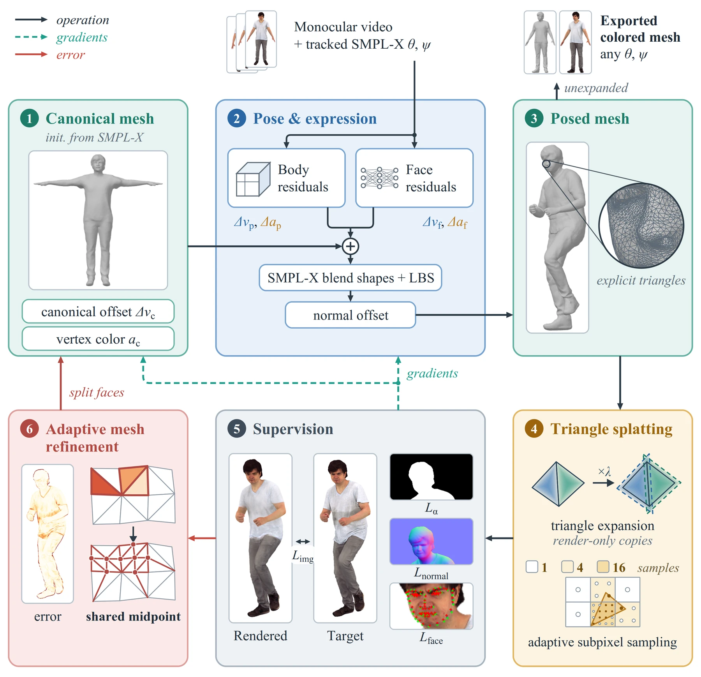
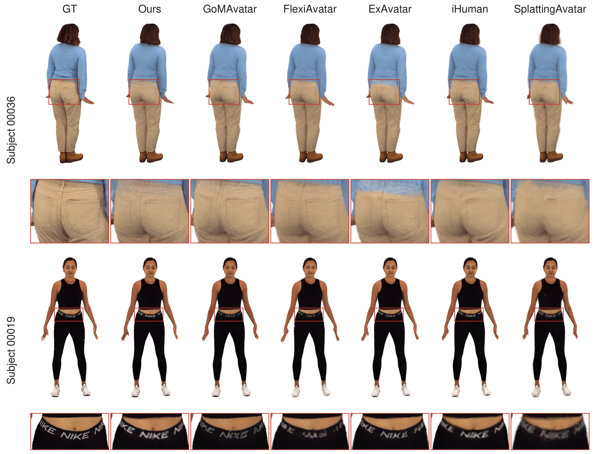
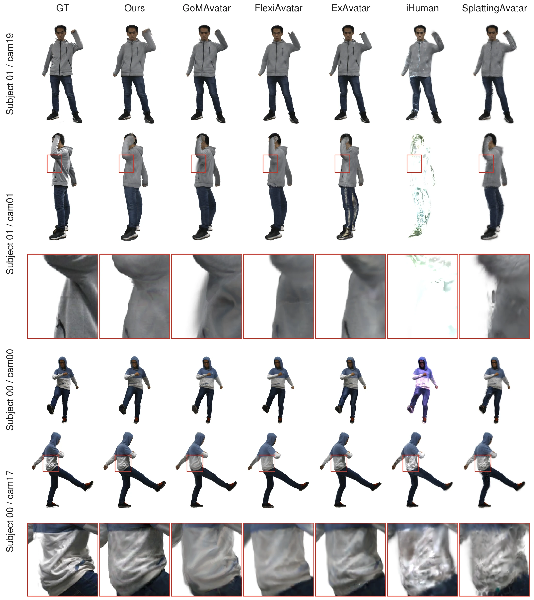
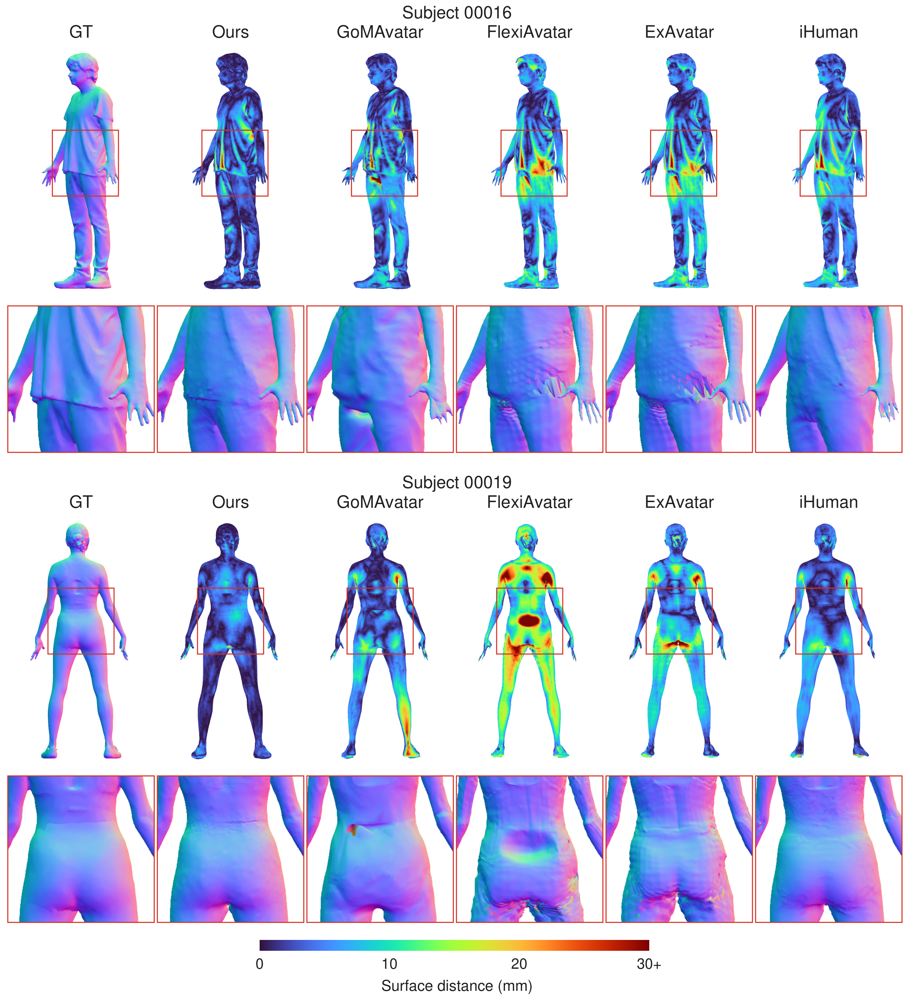

Abstract
Recent human avatar methods based on Gaussian splatting achieve high visual quality. However, accurate image fitting does not necessarily produce an accurate mesh for animation. We present MeshSplatAvatar, which reconstructs a watertight human mesh with detailed appearance and full-body animation control from monocular video by rendering its triangles in place of Gaussians through MeshSplatting with the adaptations needed for effective mesh optimization. Building on this unified mesh representation, we use progressive adaptive refinement to capture fine surface detail and model shading with directionally varying environment illumination and efficient self-occlusion.MeshSplatAvatar achieves the best image quality among the compared avatar methods on X-Humans and THuman4.0, with X-Humans mesh Chamfer distance of 4.87 mm versus 7.28 mm for the strongest baseline. Fitting takes about 10.8 minutes per X-Humans subject, with 35 FPS inference on a single A100 GPU.
Method

Results
Click an image to view it at full size.
Appearance on X-Humans

Appearance on THuman4.0

Geometry on X-Humans

BibTeX
@misc{zhang2026meshsplatavatar,
title = {MeshSplatAvatar: Animatable Mesh Avatars from Monocular
Video via Differentiable Triangle Splatting},
author = {Zhang, Bolin},
year = {2026}
}Publication details will be added when available.